Het was een beetje chaotisch en soms zelfs frustrerend. Maar uiteindelijk was alles duidelijk.
Ik had zin om te beginnen schetsen, maar wist niet goed waar te beginnen. Ik heb het dan een paar dagen laten liggen om wat ideeën te kunnen opbouwen in mijn hoofd.

Ik kom dagelijks in het station dus kon ook zeker inspiratie opdoen. Wat mij opviel aan de schermen in het station nu, is dat ze heel duidelijk en gestructureerd zijn, maar dat de tekst redelijk klein is. En dat het soms nog al moeilijk is om te zien in welke lijn je moet kijken. Hiervoor heb ik al het idee om ergens een kleurverschil in te brengen of te gaan werken met duidelijker afgebakende vakken. Persoonlijk snap ik ook nog niet alles wat er op de schermen staat. Dit komt misschien omdat ik het niet altijd bekijk want ik weet waar ik naartoe moet. Maar misschien moet er hier wel iets aan veranderen.
Ik begin nu met schetsen, maar omdat ik niet goed weet wat er juist allemaal op zo’n scherm moet staan, vroeg ik aan ChatGPT om mij een lijstje te geven. Hij gaf mij o.a. mee dat er zeker de volgende dingen op de schermen aanwezig moeten zijn: Actuele vertrektijden, tussenhaltes/belangrijke knooppunten, eventuele vertragingen/afschaffingen, spoorwijzigingen, volgende treinen, pictogrammen voor type trein, taalopties, datum en tijd, … . Daarbuiten gaf hij me ook de tips om te werken met kleurcodes en iconen. Hiermee ben ik aan de slag gegaan.
 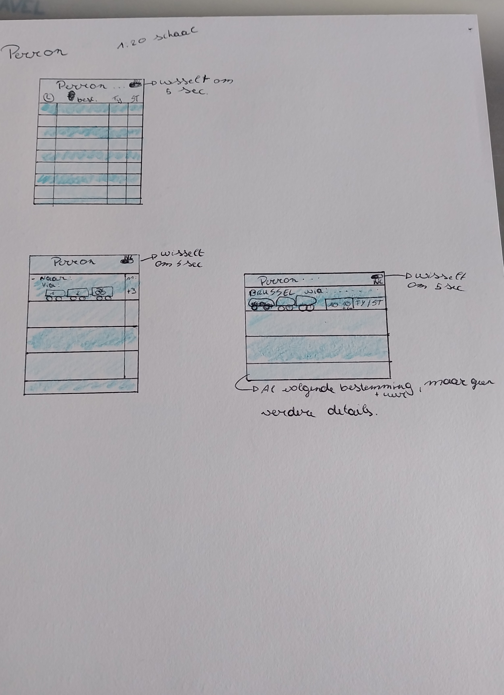
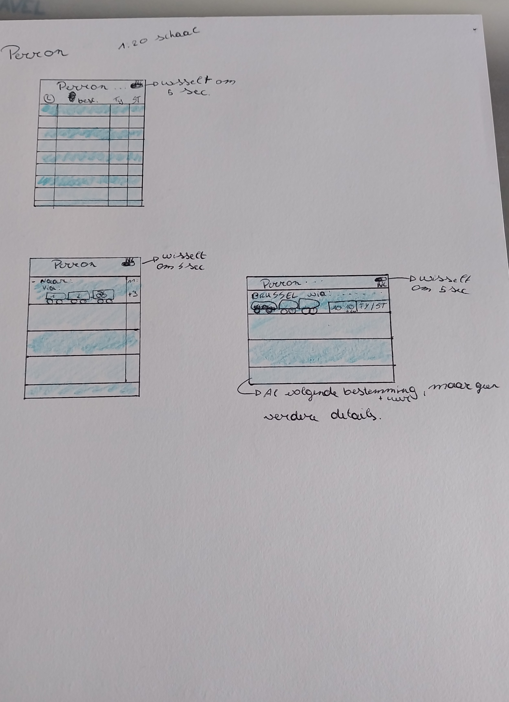

Volgens mij hadden we deze week geen les van Prototyping Tools, omdat het Studay was. Maar in deze week heb ik wel een beetje verder gewerkt aan mijn schermen.
Ik heb tijdens de week goed gekeken naar de schermen in het station. En ook op sociale media heb ik gekeken of er ergens interessante ontwerpen voorbijkwamen. Maar voor de rest dus niet veel om over te schrijven, omdat we dus geen les hebben gehad.
Deze les hebben de lectoren nog wat meer uitleg gegeven over Figma. Ze hebben ook wat feedback gegeven over de schermen van een paar studenten. En daarna hebben we dan nog even de tijd gekregen om hier aan verder te werken. Wat zeer fijn was, zo kon je ook een beetje kijken waar de rest mee bezig was. Of als je twijfelde over iets kon je eens om hun mening vragen.
Aan het einde van deze les werd er gezegd om je schermen dan eens in ChatGPT te zetten en te vragen om hier een HTML en CSS van te maken. Maar aangezien ik nog nooit met dit soort dingen had gewerkt had ik ook geen idee of het juist was wat eruit kwam en wat ik er dan achteraf mee moest doen. En dan was uiteindelijk mijn limiet van ChatGPT bereikt :).
Deze week hebben we verder gewerkt met de HTML dingen. Hierbij begon de lector met een heel snelle en voor mij onduidelijke uitleg. Hij vertelde in het begin dat we of mee moesten doen of het moesten opschrijven, maar voor ik een keuze had gemaakt was hij al bezig en had ik dus het begin al gemist en kon ik heel de les niet meer mee.
Uiteindelijk heb ik dit thuis geprobeerd uit te zoeken (aan de hand van ChatGPT). En heb ik na wat zoeken wel gevonden hoe het een beetje ineen zat en vond ik het nog leuk om een beetje mee te spelen en te ontdekken wat wat doet.
Deze week heeft de lector nog eens meer uitleg gegeven over HTML en CSS aan de had van een cursus, waar ik heel dankbaar voor ben. Hierdoor weet ik nog meer over alle kleine afkortingen en waar ze eigenlijk voor staan. En dan is het leuk om hier mee aan de slag te gaan en er echt iets eigen van te maken.
Tijdens de les hadden we daarna ook nog tijd om er zelf aan verder te werken en vragen te stellen. Wat heel fijn was. Zo moet je thuis niet alles uitzoeken en kun je verder aan de slag. En nu heb ik wel zin om hier aan verder te werken na de examens en hier misschien nog meer over te leren.
Op vlak van HTML heb ik geen echt duidelijk idee wat we juist hebben gedaan vandaag. Er is veel uitleg gegeven over allemaal verschillende dingen.
We hebben ook les gekregen voor onze trein schermen. Dit was een heel goede les waarbij we heel veel tips hebben gekregen. Vooral over Do’s and Dont’s. Maar echt wel vrij nuttig, en het waren ook echt dingen die ik nog niets wist.
In deze lesweek kregen we nog eens uitleg over verschillende dingen van het HTML gedeelte. Ik ben hier dus echt niet met mee, maar ik doe mijn best om alles te begrijpen. Ik weet ook niet goed wanneer verwacht wordt dat er iets ingediend word, maar we zien wel.
.
Voor de treinschermen moesten we tegen het begin van de les al verschillende schermen maken voor de gsm. Ik dacht dat we het moesten indienen, maar blijkbaar kregen we deze week pas de opdracht tegen volgende week. Wel leuk dat ik nu de tijd heb om alles mooi aan te passen. Ik heb voor deze week verschillende schermen gemaakt. - Taalkeuze - Inloggen - Account aanmaken - Home pagina - Account pagina - Zoek pagina - Abonnement pagina - Favorieten pagina Ik vond het heel leuk om hier aan te werken. Het was leuk om wat uit te zoeken hoe alles goed in elkaar zou zitten en welke kleuren waar het beste overkomen.
Deze week hebben we voor de HTML lang gezocht achter iets dat uiteindelijk niet gevonden is. Ik vond het moeilijk om mee te volgen, omdat ik sowieso al niet zo veel ken van computers, en als het dan zo snel vooruit gaat en sommige dingen iets minder goed worden uitgelegd of getoond is het nog al frustrerend.
 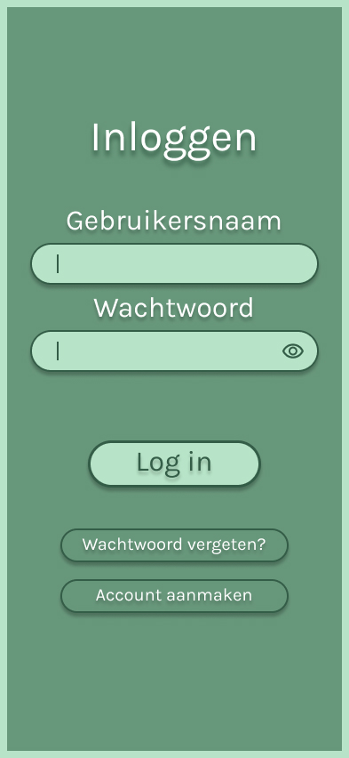
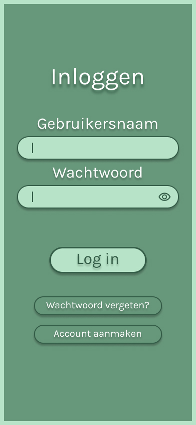

 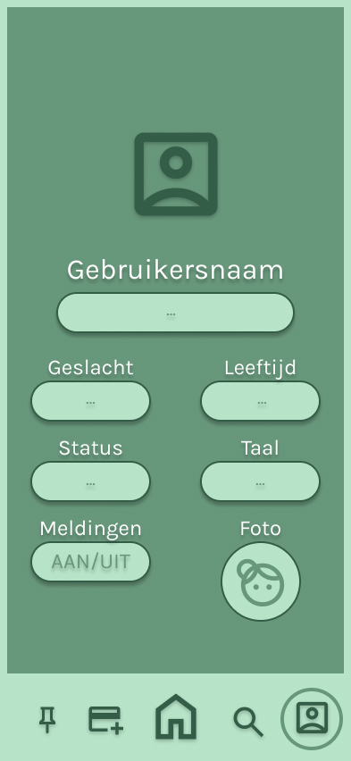
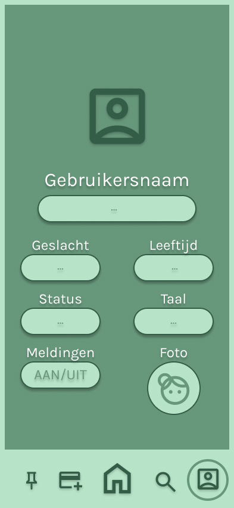
Voor de trein schermen moesten we tegen deze week 3 verschillende schermen maken. Ik had er een stuk of 8 gemaakt. Dit waren dan vooral inlog schermen en verschillende pagina’s. In de les werd er dan heel veel feedback gegeven over verschillende schermen die ingediend werden. Dit vind ik allemaal wel zeer nuttig en kon ik veel uit leren. Ik had de opdracht blijkbaar wel niet goed begrepen, want blijkbaar was het gewoon de bedoeling dat je alle schermen die we eerst al hadden ontworpen nu op het formaat van een gsm ontwerpt.
Op vlak van html hebben we deze week de problemen van vorige week opgelost. Dit bleek veel simpeler dan gedacht. Dus nu konden we aan de slag gaan met het toevoegen van ons Logboek aan deze webpagina’s. Hele fijne stap, want nu heb ik weer een beetje het gevoel dat het vooruit gaat!

 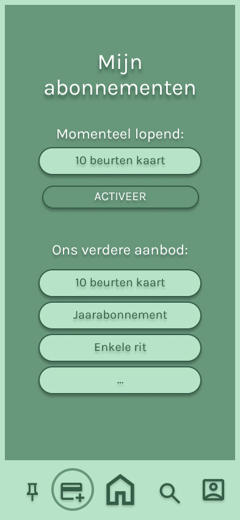
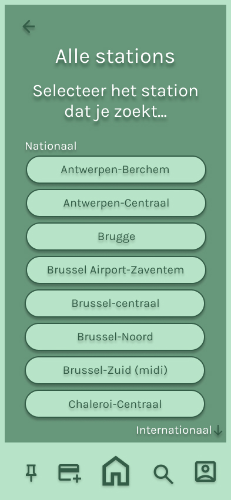
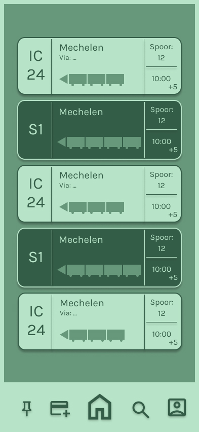
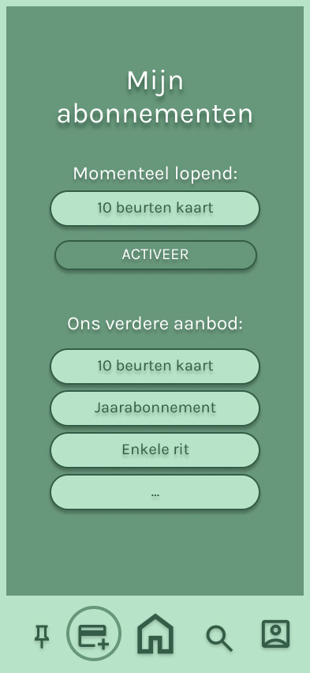
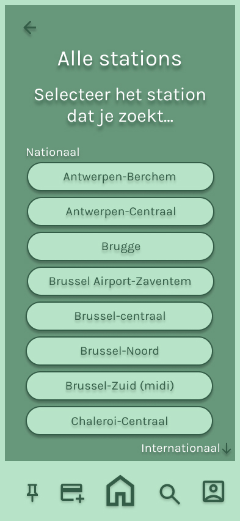
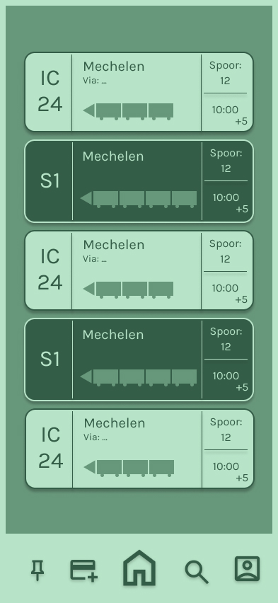
Voor de les van deze week heb ik mijn schermen thuis afgemaakt. Hiervoor heb ik een paar schermen toegevoegd en heb ik interacties toegevoegd. Door die interacties wordt het steeds leuker, omdat er echt leven in komt. En je moet ook bij elke pagina zien dat je terug kan enz. Zeer leuk!
Voor HTLM mochten we deze week ook verder werken aan onze website. Leuk om verder te werken en te onderzoeken hoe het allemaal juist werkt. En hopelijk komt het allemaal mooi bij elkaar.
Deze week mochten we weer vrij werken aan onze website en kregen we de mogelijkheid om feedback te krijgen.
Verder voelde ik met niet zo super tijdens deze les dus ben ik iets eerder weggegaan. Maar in de week heb ik wel nog verder gewerkt aan de site.
Deze week heb ik voor mijn gevoel veel stappen gemaakt in het ontwerp van mijn website. Ik heb het gevoel dat ik er nu echt iets leuks en eigen van aan het maken ben. En het is leuk om er afbeeldingen aan toe te voegen zodat iedereen een beetje kan zien wat mijn proces is geweest.
Verder kregen we deze week ook nog de kans om verder te werken aan onze schermen en website. En hier ook feedback over te vragen. Dat heb ik gedaan, en hier heb ik een paar goede tips gekregen om mijn ontwerpen nog iets beter te maken. Zoals de balk onderaan iets duidelijker maken, en de stroke rondom weglaten. En nog een paar kleine aanpassingen om het er iets cleaner te laten uitzien.
.jpg)
.jpg)
.jpg)
.jpg)
.jpg)